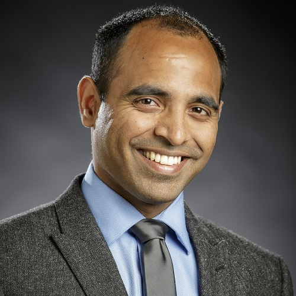
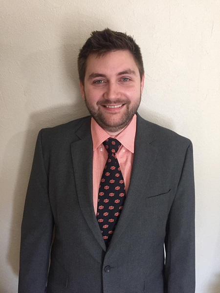
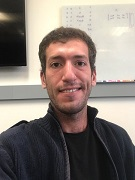
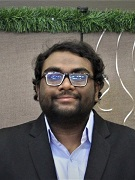
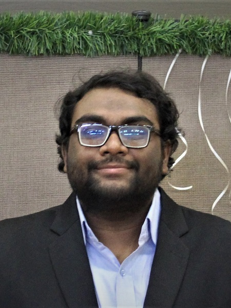
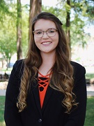
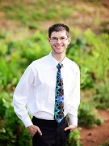
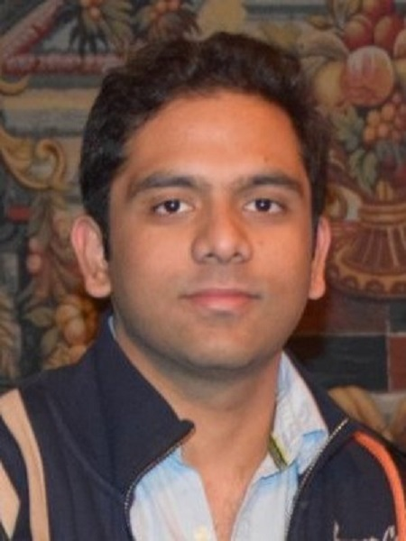
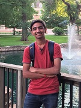
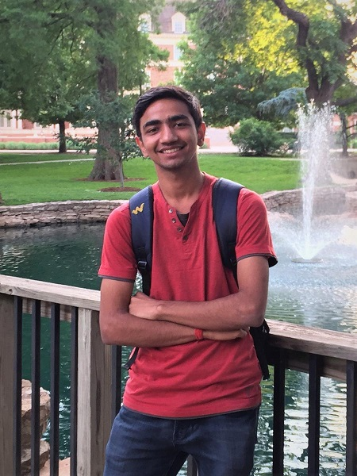

Lab Director

Rushikesh Kamalapurkar received his M.S. and his Ph.D. degree in 2011 and 2014, respectively, from the Mechanical and Aerospace Engineering Department at the University of Florida. After working for a year as a postdoctoral research fellow with Dr. Warren E. Dixon, he was selected as the 2015-16 MAE postdoctoral teaching fellow. In 2016 he joined the School of Mechanical and Aerospace Engineering at the Oklahoma State University as an Assistant professor. His primary research interest has been intelligent, learning-based control of uncertain nonlinear dynamic systems. He has published several book chapters, over 25 archival journal articles, and over 30 peer-reviewed conference papers. His work has been recognized by the 2015 University of Florida Department of Mechanical and Aerospace Engineering Best Dissertation Award, and the 2014 University of Florida Department of Mechanical and Aerospace Engineering Outstanding Graduate Research Award.
Contact:
Phone: (405) 744-5900
Email: rushikesh.kamalapurkar@okstate.edu
Office: 329 GAB
Ph.D. Students

Ryan Self is a Doctoral student working in the Systems, Cognition, and Control Laboratory at Oklahoma State University. He received his B.S. and M.S. degrees in 2014 and 2016, respectively, from Mechanical and Aerospace Engineering Department at Oklahoma State University. His research interests include robotics and autonomous systems, with a focus on machine learning. During the time completing his master’s work, he worked as a research assistant focusing on drilling optimization. His worked involved incorporating a Particle Swarm Optimization (PSO) algorithm to a Rate of Penetration (ROP) model to optimize a drilled section of an oil well. He has published two peer-reviewed conference papers based on his work he did during his master’s program. In 2014 and 2015, he received the Samson Energy Student Graduate Fellowship in Petroleum Engineering, and in 2017 received the John Brammer Graduate Research Fellowship for his PhD studies at Oklahoma State University.

Moad Abudia is a doctoral is a Doctoral student working in the Systems, Cognition, and Control Laboratory at Oklahoma State University. He received his B.S. and M.S. degrees in 2016 and 2019, respectively, from Mechanical and Aerospace Engineering Department at Oklahoma State University. His research interests include automation, optimization and AI. During his master’s program, he worked as a research assistant for the Web Handling Research Center, where he developed mathematical models for a web line and utilized system ID algorithms and GA metaheuristics for optimizing the controller along a number of dimensions.
M.S. Students


S M Nahid Mahmud is a Master’s student in Mechanical Engineering at Oklahoma State University. He received his Bachelor’s Degree in Mechanical Engineering at Islamic University of Technology, Bangladesh. During his senior year, he served as the Head of publications in Mecceleration (Bangladesh’s biggest mechanical engineering competition) and he also worked as the Editor-in-chief for the yearly published magazine named CORE. After his graduation, he served as an adjunct faculty at Sonargaon University, Bangladesh for one and a half years. Currently, he is working under Dr. Kamalapurkar in the Systems, Cognition, and Control Laboratory with research focuses on path planning, trajectory generation and trajectory tracking for the UAVs using nonlinear Optimal Control.

Katrine Hareland is a Master’s student in Mechanical Engineering at Oklahoma State University. She received her Bachelor’s Degree in Mechanical Engineering at Oklahoma State University in 2019. During her undergraduate study at Oklahoma State University she developed research interests in robotics, controls and biomechanics. She is currently working on her MS thesis with Dr. Rushikesh Kamalapurkar in the Systems, Cognition, and Control Laboratory along with Dr. Jerome Hausselle in the Biomechanical Analysis & Musculoskeletal Modeling (BAMM) Lab.
Alumni
M.S. Students

Michael Harlan is a Master’s student in Mechanical Engineering at Oklahoma State University. He received his Bachelor’s Degree in Mechanical Engineering at Oklahoma Christian University in 2017. He is currently working under Dr. Kamalapurkar in the Systems, Cognition, and Control Laboratory with a research focus on Nonlinear Hybrid Optimal Control.

Ketan Rachamalla Sachidanand received his Master’s degree in Mechanical & Aerospace Engineering at Oklahoma State University. He received his Bachelor’s degree in Mechanical Engineering and also has Master’s degree in Advanced Manufacturing Systems. He is currently working under Dr. Rushikesh Kamalapurkar with his research focus on Optimization of trajectories for manipulators. He is currently working on Optimal Trajectory Planning of a Baxter Robot using Multi-Objective Optimization (NSGA-II). He has worked on covert path planning for mobile robots in dynamic environments and Hardware in the loop Simulation for an autonomous Golf Cart.
UG Students


Vivek Malik is a fourth-year undergraduate student currently enrolled in Mechanical Engineering in Indian Institute of Technology, Kharagpur. His research interests include robotics and autonomous systems, especially in the domain of path planning and controls. He worked under Dr Rushikesh Kamalapurkar during May-July 2018 on the implementation and testing of path planning algorithms on the electric golf cart. He also contributed to the development of the low-level controller for cart and sensor integration.